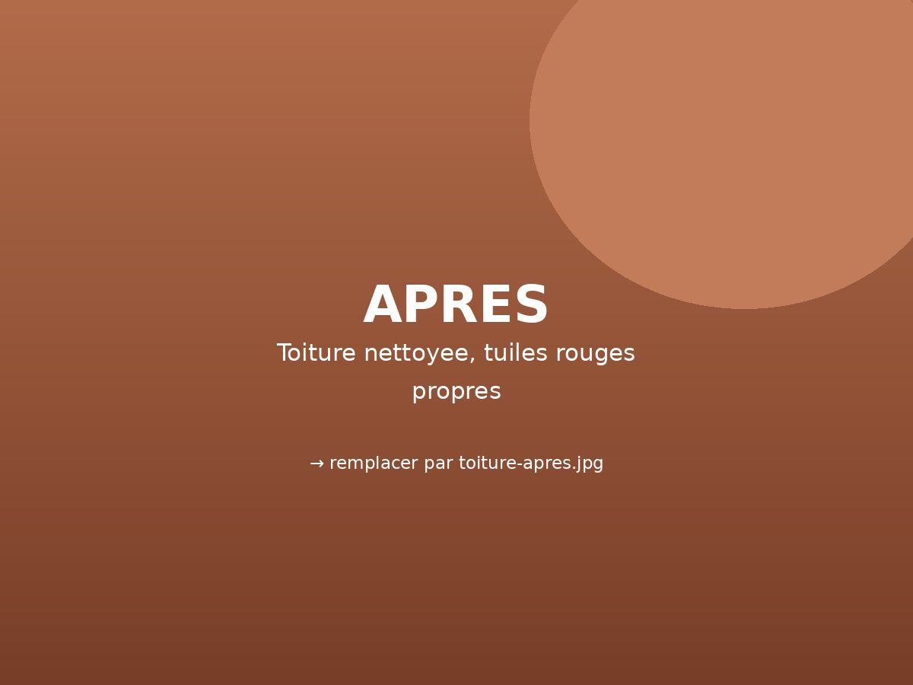
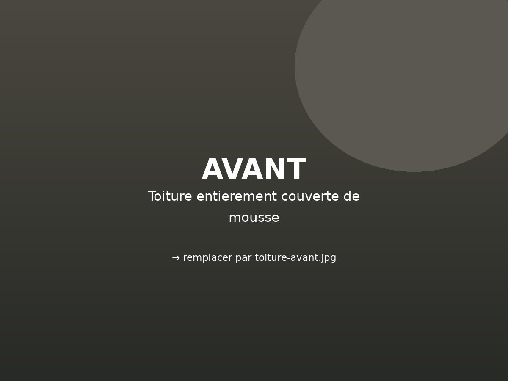
Démoussage complet d'une toiture
Tuiles entièrement recouvertes de mousse : nettoyage complet du toit, gouttières dégagées. Les tuiles ont retrouvé leur teinte d'origine.
Élagage, abattage, taille de haies, nettoyage de toitures et de façades à Tarbes et dans les Hautes-Pyrénées. Travaux soignés, déchets évacués, devis gratuit.
06 85 16 78 29 Réponse rapide aux heures ouvréesDes chantiers réalisés à Tarbes et dans les Hautes-Pyrénées. Sur les deux premières photos, faites glisser le curseur pour voir l'avant et l'après. (Images d'illustration — les photos des vrais chantiers prendront leur place.)


Tuiles entièrement recouvertes de mousse : nettoyage complet du toit, gouttières dégagées. Les tuiles ont retrouvé leur teinte d'origine.
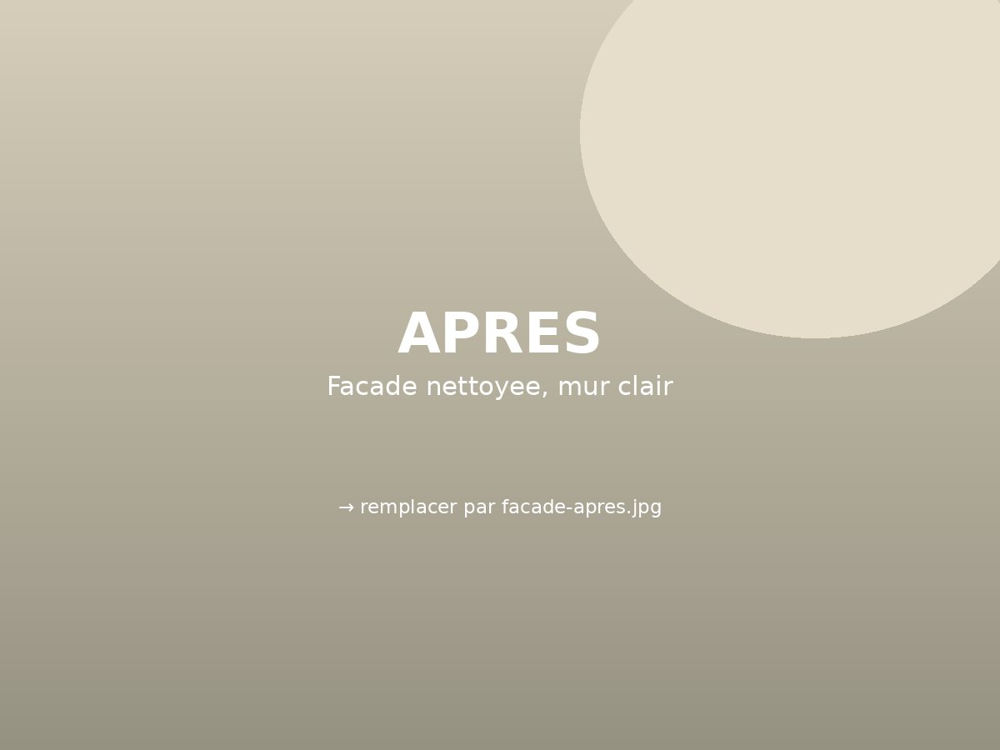
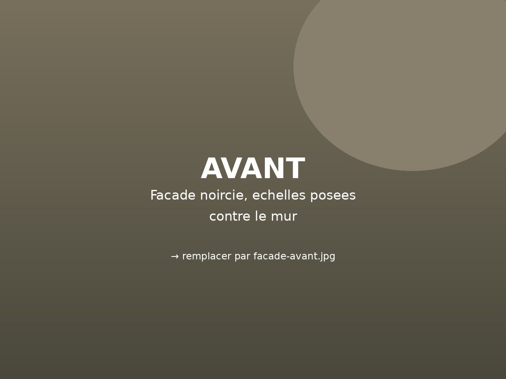
Façade noircie par les années et pignon envahi par le vert : nettoyage haute pression sur toute la hauteur, sans abîmer l'enduit.
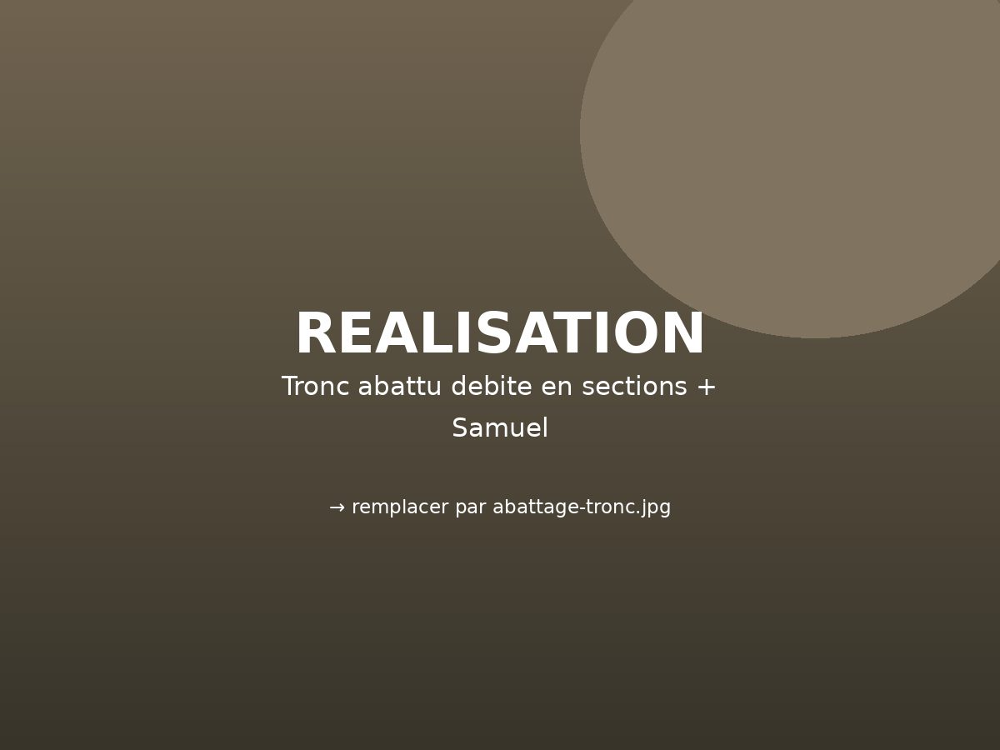
Arbre abattu puis débité sur place en sections manipulables, avant chargement et évacuation complète du bois.
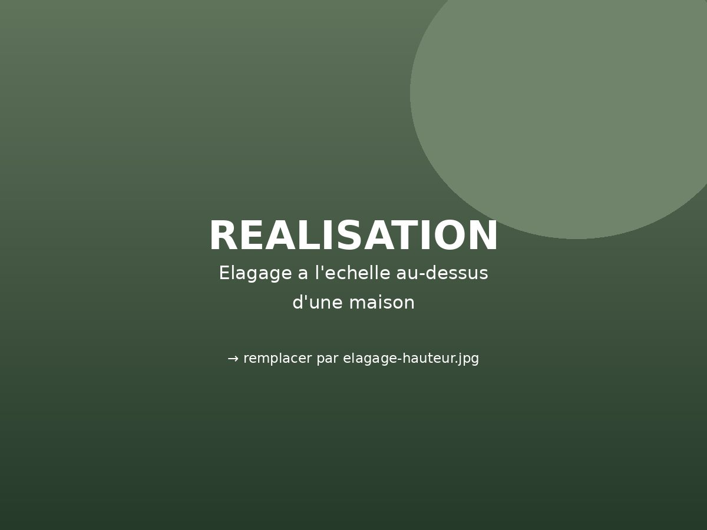
Branches surplombant le toit et la ligne électrique : démontage progressif, sans dégât sur la maison ni sur le jardin.
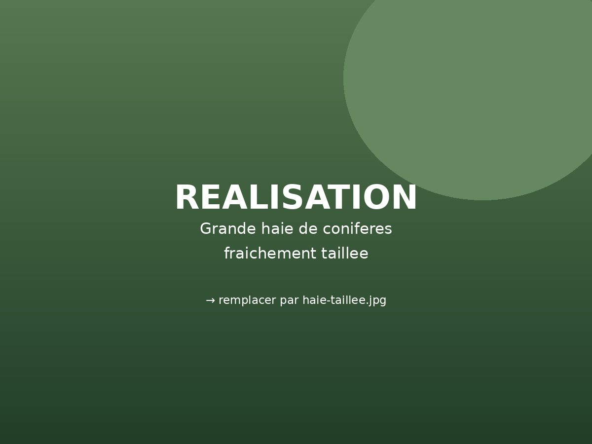
Haie de plusieurs mètres reprise sur toute sa longueur : hauteur régularisée, faces droites, déchets emportés le jour même.
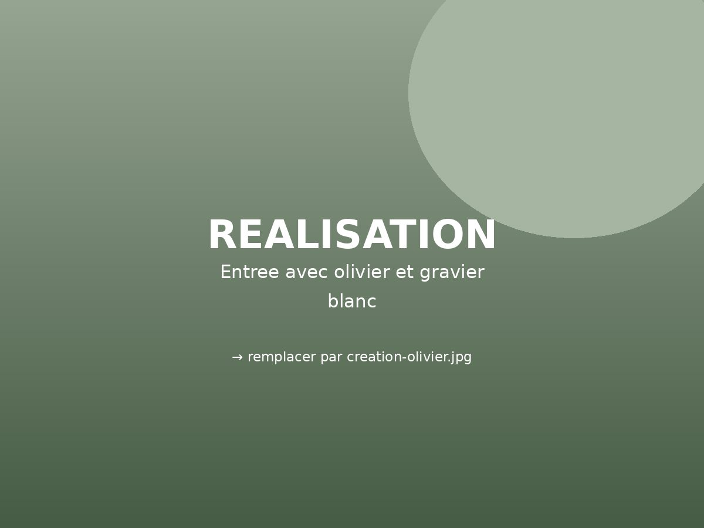
Massif en gravier clair, bordure béton et olivier mis en scène à l'entrée de la propriété.
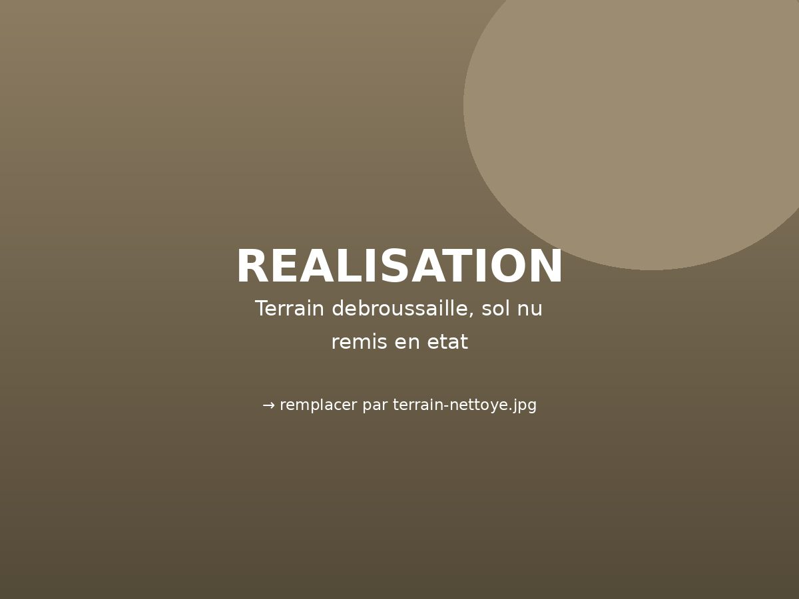
Broussailles, ronces et végétation spontanée éliminées : le terrain est rendu nu et prêt pour un nouvel aménagement.
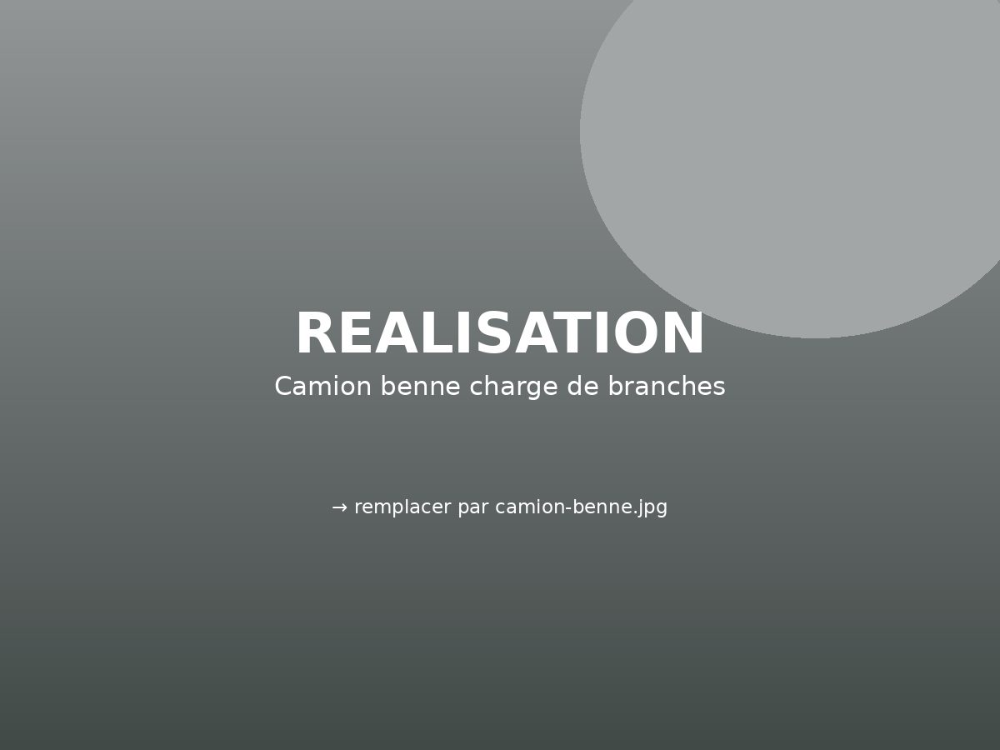
Le camion benne fait partie du chantier : branches, troncs et déchets verts sont chargés et emportés en fin d'intervention.
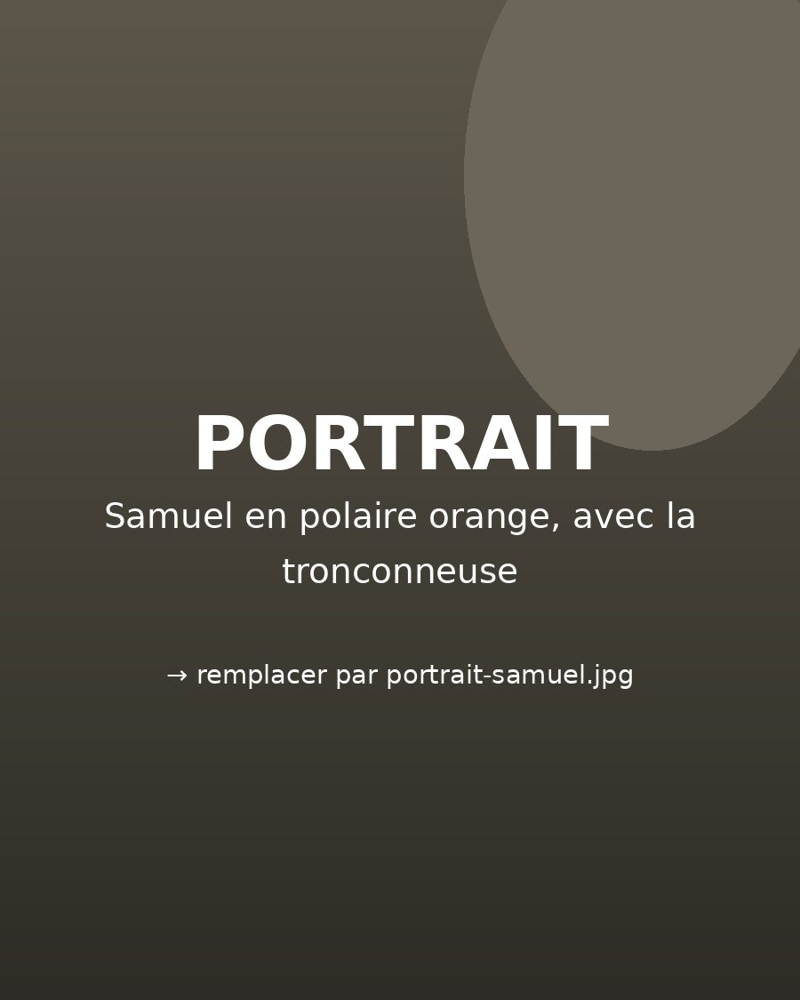
Sur chaque chantier, c'est moi que vous avez en face de vous : je viens voir le travail, j'établis le devis, et c'est moi qui le réalise. Pas de sous-traitance, pas d'intermédiaire.
Élagage en hauteur, abattage délicat au-dessus d'une maison, taille de haies de plusieurs mètres, démoussage de toiture : ce sont des travaux qui demandent le bon matériel et de l'habitude. Le camion benne suit sur tous les chantiers — vous retrouvez votre terrain net, pas un chantier à finir.
Samuel Steinbach
De la conception aux finitions, nous prenons en charge l'ensemble de votre aménagement.
Taille douce, élagage de mise en sécurité, réduction de couronne. Interventions à la corde ou à l'échelle, y compris au-dessus des toitures.
Abattage d'arbres âgés, malades ou dangereux, démontage par sections en espace contraint, découpe et évacuation du bois.
Haies de conifères, lauriers, thuyas de toutes hauteurs : remise en forme, rabattage, coupes nettes et régulières.
Démoussage et nettoyage des tuiles, traitement des mousses, nettoyage des gouttières. Votre toit retrouve sa couleur d'origine.
Nettoyage haute pression des murs, pignons et terrasses : la maison est débarrassée du noir et du vert qui la vieillissent.
Terrains laissés à l'abandon, ronces, friches : nettoyage complet et évacuation, jusqu'au terrain nu prêt à être réaménagé.
Massifs minéraux, plantations d'arbres, entrées et abords : la finition qui met la maison en valeur.
Pose de clôtures et de portails, bordures, murets et petits travaux de maçonnerie extérieure.
La personne qui vient voir le chantier est celle qui monte dans l'arbre. Vous savez à qui vous parlez du début à la fin.
Abattage au-dessus d'une toiture, arbre en limite de propriété, haie de plusieurs mètres : les chantiers délicats ne sont pas refusés.
Branches, troncs, mousse de toiture et gravats repartent avec nous. C'est compris, sauf mention contraire au devis.
Déplacement gratuit, devis clair. Pas de rallonge découverte en fin de chantier.
En quelques minutes, via le formulaire ci-dessous ou par téléphone. Photos bienvenues.
Type de travaux, terrain, budget : nous vérifions que nous pouvons bien vous répondre.
Un appel pour préciser, puis une visite sur place quand le projet le demande.
Un devis détaillé et expliqué, avec un calendrier réaliste.
Chantier planifié, tenu et livré propre — et nous restons joignables ensuite.
Démonstration — aucune donnée n'est envoyée ni conservée
05Devis gratuitQuelques questions, deux minutes montre en main. Plus votre demande est précise, plus notre première réponse le sera aussi.
Étape 1 sur 8
Quel est votre projet ?
Choisissez ce qui s'en rapproche le plus.
Où se situe votre projet ?
Pour vérifier que vous êtes bien dans notre zone d'intervention.
Quelle est l'ampleur du chantier ?
Une estimation suffit — cela donne une idée du temps et du matériel nécessaires.
Quel budget envisagez-vous ?
Cela nous permet de vous orienter vers une solution cohérente avec votre projet.
Quand souhaitez-vous commencer ?
Pour intégrer votre projet dans notre planning de chantiers.
Décrivez-nous votre projet.
Vos envies, les contraintes du terrain, ce qui existe déjà… tout est utile.
Ajoutez quelques photos
Facultatif, mais très utile : l'état actuel du terrain nous aide à préparer un premier avis précis.
Démonstration : vos photos restent dans votre navigateur et ne sont envoyées nulle part.
Vos coordonnées
Pour vous répondre — rien d'autre. Pas de démarchage, pas de revente de données.
En mode réel, vous recevriez cette demande immédiatement, avec tous les détails ci-dessous.
Votre commune n'apparaît pas ? Demandez-nous — selon le projet, nous élargissons volontiers.
Vos avis clients apparaîtront ici.
À Tarbes et dans les Hautes-Pyrénées : Ibos, Aureilhan, Séméac, Odos, Laloubère, Juillan, Lourdes, Vic-en-Bigorre, Bagnères-de-Bigorre… Pour un chantier plus éloigné, demandez : c'est souvent possible.
Une branche qui menace une toiture ou un arbre fragilisé après une tempête, ça n'attend pas. Dans ce cas, appelez directement au 06 85 16 78 29 plutôt que de passer par le formulaire.
Ils repartent avec nous. Le camion benne fait partie de l'équipement : le terrain est laissé propre en fin de chantier, c'est compris dans la prestation sauf mention contraire au devis.
Oui. Quand la chute libre est impossible, l'arbre est démonté par sections, branche par branche, pour ne rien abîmer autour. C'est une grande partie du travail.
Non, à condition d'adapter la pression et la méthode au type de tuile et à son état. C'est justement ce qui est vérifié lors de la visite avant devis.
Cela dépend de la hauteur, de l'accès, du nombre d'arbres ou de la surface de toit. C'est pour cela que le formulaire pose quelques questions : cela permet de répondre avec un ordre de grandeur sérieux plutôt qu'un prix au hasard.
Oui. Déplacement pour voir le chantier, puis devis gratuit et sans engagement.
Oui, et c'est très utile : une ou deux photos de l'arbre, de la haie ou de la toiture permettent souvent d'estimer le travail avant même de se déplacer. Le formulaire permet de les joindre.
Oui : entretien de parcs, espaces verts de copropriétés et abords de bâtiments professionnels font partie des interventions courantes.
Décrivez-le en deux minutes, ou appelez-nous directement — nous vous dirons simplement ce qui est possible.